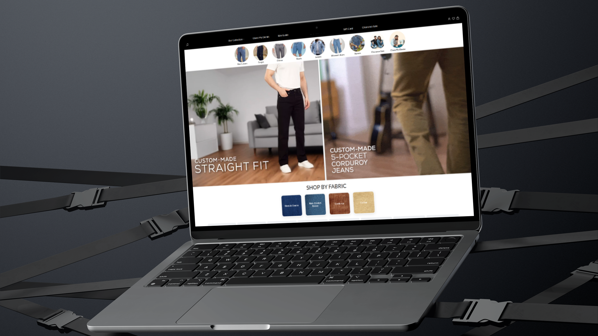

Final Build
Built directly from client requirements on top of a base Shopify theme, with all UI decisions made and developed during the build process.

Case Study
Shopify storefront theme customisation focused on improving the mobile shopping experience and UI consistency across the store.
Role
Shopify Theme Customisation
Platform
Shopify
Scope
Storefront UI & Mobile Experience

Enim is an apparel brand operating on Shopify. The existing storefront had a number of UI inconsistencies and a mobile shopping experience that was negatively impacting usability for their customer base. The focus of this project was to customise the Shopify theme to improve layout consistency across the store, refine the mobile browsing and purchasing experience, and bring the storefront's visual presentation in line with the brand's identity.
I was responsible for customising the Shopify theme across the storefront, identifying and resolving UI inconsistencies, and improving the mobile shopping experience. Work involved adjusting layout structures, refining spacing and typography settings within the Shopify theme editor, and implementing custom CSS overrides where the default theme fell short of the required design standard.
Working within a Shopify theme required identifying opportunities to introduce consistency without rebuilding the store from scratch. Shared layout patterns, consistent spacing across product grids, and unified typographic styles were applied across the storefront to create a more cohesive shopping experience.
Product grids and page sections were standardised to ensure a consistent visual rhythm across collection and product pages.
Spacing inconsistencies across mobile breakpoints were resolved to improve readability and reduce visual noise in the shopping flow.
Repeated storefront elements such as product cards, banners, and call-to-action sections were visually unified across the theme.
The approach focused on working systematically through the storefront to identify and resolve inconsistencies rather than applying surface-level visual changes. Mobile experience improvements were prioritised given that the majority of ecommerce traffic arrives on mobile devices. Layout adjustments, improved tap target sizing, and better content stacking on small screens were core to this work. All changes were made within the existing Shopify theme architecture to preserve the store's existing functionality and avoid disruption to the checkout flow.
Built directly from client requirements on top of a base Shopify theme, with all UI decisions made and developed during the build process.
Next Project